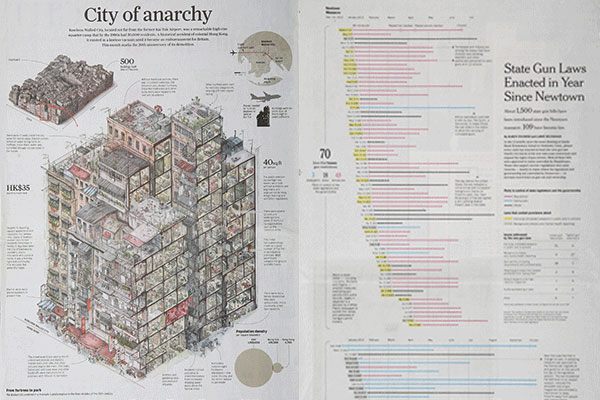

|
Q1: Winter Wonderland
02014-Q1 Reykjavik, ICELAND: The first quarter of this year has been busy - consumed by survey work. We've enlisted some help, all the way from Portugal, to move a few other projects forward, but that's Q2 news.
Some of our time has been spent out in the wilderness capturing photos and video with the team behind the new film HEILD. We've been treated to an advanced screening and can't wait until the public debut. (Watch the trailer)
|
Malofiej: Data visualization awards
The annual event in Pamplona Spain is called Malofiej. It brings together the best in the business with regards to Data Visualizations. The finalists for best printed data vizualization of the year read like a who's who of Big Data Teams.

If you or your company are interested in Big Data or Data Viz, you need keep an eye on this event. A full list of finalists can be found on www.malofiejgraphics.com
|
|
We Launched our Kickstarter Campaign

Analog is one of our delightful side-projects. It originally started with the infamous Eyjafjallajökull eruption and subsequent letter pressed notebooks.
At the end of March, we launched our own Kickstarted campaign to fund atleast 3 more notebook designs; Christmas Island, Easter Island and St. Helena. With a potential of 4 more in the stretch goals.
We have the funding now. If you pledge, this is an order, we are definitely going to print - it is just a question of how many. The more people we get, the more designs we can afford to create.
You can help by Pledging on Kickstarter and telling all your friends.
Our 7th design of the series is going to be an out-of-this-world island. I really hope we get there to print it. It should look amazing!
|
|
Kickstarter Curation: City of Darkness Revisited
Recently, we've spent a lot of time on Kickstarter. It is an amazing place to find beautiful objects. We wanted to highlight one of the more interesting projects and why you should be funding it.
|
|
|
Two Year Time Machine
This is what were we writing two years ago this quarter.
Briefs
We started a new section called Briefs. The idea being these are shorter articles which can be written more freely.
Weeknotes
We are currently in week #164. Weeknotes are brief posts about our weekly progress along with interesting bric-à-brac of links and videos.
Random
Go Pot-Luck and view a random article
Tell Your Friends!
|
|
|
|
Contest Winner
Q1's Fooled by Randomness Book winner was Luis from Óbidos, Portugal. The randomly chosen co-ordinates where Lat: 23.784 Lon: -12.995 over 1700km away.
02014 is the year of randomness. This quarter we'll be giving away the book Rock, Paper, Scissors: Game theory in everyday life by Len Fisher.
You can't win, if you don't enter!
|
|